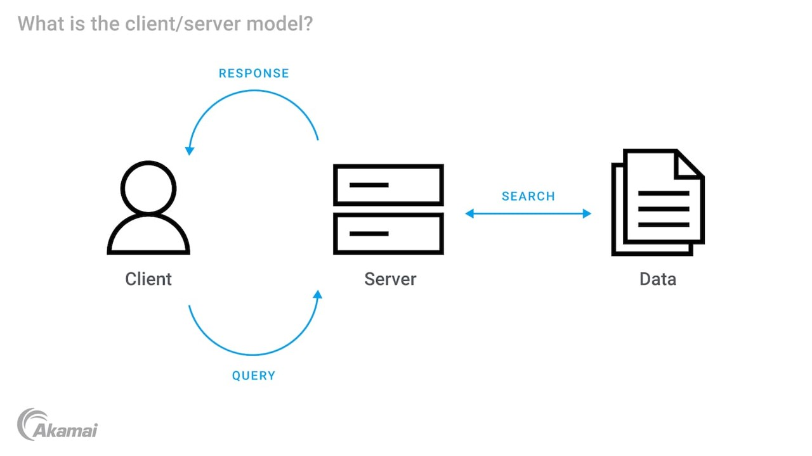
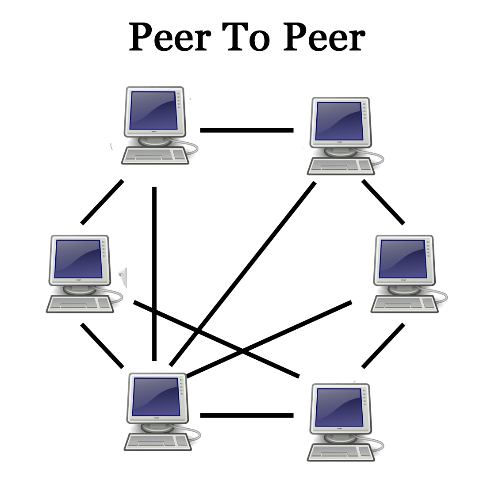
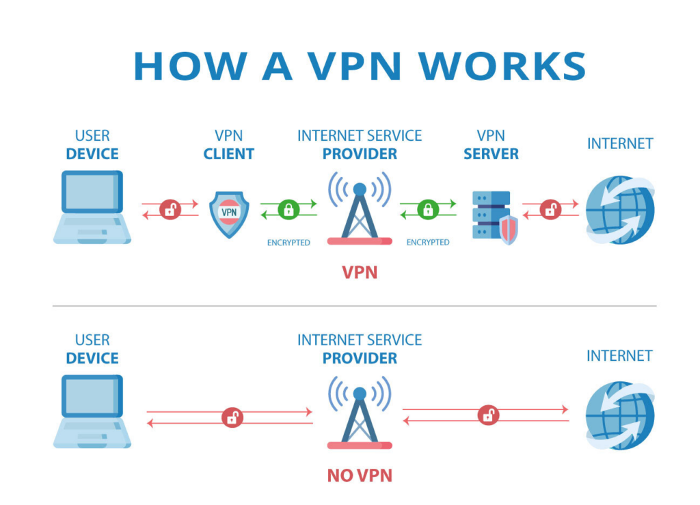

Jenis Jaringan Komputer berdasarkan Fungsinya

- Client-Server Network
- Deskripsi: Dalam jaringan ini, ada satu atau lebih komputer server yang
menyediakan layanan atau sumber daya kepada komputer klien.
- Fungsi:
- Server: bertanggung jawab atas manajemen data, aplikasi, dan layanan lainnya.
- Klien: mengakses dan menggunakan layanan yang disediakan oleh server.
- Contoh: Jaringan di kantor di mana server menyediakan file sharing, email, dan
database.
- Peer-to-Peer (P2P)
- Deskripsi: Semua komputer dalam jaringan ini dianggap setara dan berbagi sumber
daya secara langsung satu sama lain tanpa server pusat.
- Fungsi:
- Setiap komputer dapat bertindak sebagai klien dan server.
- Berbagi file dan printer secara langsung antar pengguna.
- Contoh: Jaringan rumah sederhana di mana beberapa komputer berbagi file dan printer.
- Distributed Network
- Deskripsi: Jaringan di mana tugas-tugas pemrosesan dan penyimpanan data
didistribusikan di beberapa komputer yang saling terhubung.
- Fungsi:
- Mendukung komputasi terdistribusi untuk meningkatkan kinerja dan keandalan.
- Memungkinkan pembagian beban kerja dan penggunaan sumber daya yang lebih efisien.
- Contoh: Jaringan pengolahan data besar seperti jaringan penambangan kripto.
- VPN (Virtual Private Network)
- Deskripsi: Jaringan yang menggunakan internet untuk menghubungkan komputer atau
jaringan yang terpisah secara geografis melalui koneksi yang aman dan terenkripsi.
- Fungsi:
- Menyediakan koneksi aman untuk transmisi data antara lokasi yang berbeda.
- Mengizinkan akses jarak jauh ke jaringan perusahaan secara aman.
- Contoh: Karyawan perusahaan yang bekerja dari rumah mengakses jaringan perusahaan
melalui VPN.
- Intranet
- Deskripsi: Jaringan internal yang menggunakan teknologi dan protokol internet,
namun hanya dapat diakses oleh pengguna dalam organisasi tertentu.
- Fungsi:
- Berbagi informasi dan sumber daya secara internal dalam organisasi.
- Meningkatkan komunikasi dan kolaborasi di dalam organisasi.
- Contoh: Jaringan perusahaan yang menyediakan akses ke aplikasi bisnis internal,
email, dan dokumen perusahaan.
- Extranet
- Deskripsi: Ekstensi dari jaringan intranet yang memungkinkan akses terbatas dari
pihak luar, seperti pelanggan atau mitra bisnis.
- Fungsi:
- Memungkinkan kolaborasi dan berbagi informasi dengan pihak luar yang
memiliki izin.
- Meningkatkan efisiensi bisnis dengan mitra eksternal.
- Contoh: Portal pelanggan perusahaan yang memberikan akses ke layanan, produk,
dan informasi.
- SAN(Storage Area Network)
- Deskripsi: Jaringan yang didedikasikan untuk menghubungkan dan mengelola
perangkat penyimpanan data.
- Fungsi:
- Memungkinkan akses cepat dan andal ke data yang disimpan di berbagai
perangkat penyimpanan.
- Meningkatkan efisiensi dan keandalan manajemen data.
- Contoh: Jaringan penyimpanan data perusahaan yang digunakan untuk database
besar dan aplikasi bisnis kritis.

